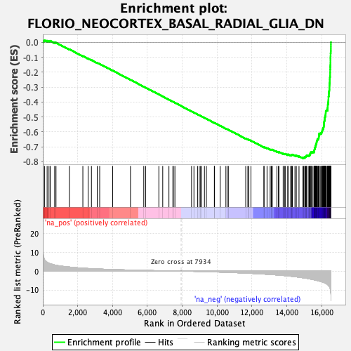
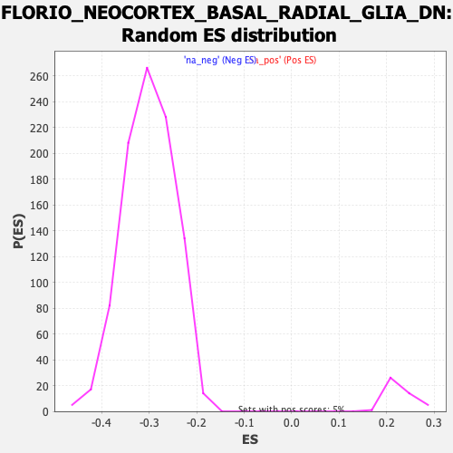

| | | Dataset | DE_genes2 |
| Phenotype | NoPhenotypeAvailable |
| Upregulated in class | na_neg |
| GeneSet | FLORIO_NEOCORTEX_BASAL_RADIAL_GLIA_DN |
| Enrichment Score (ES) | -0.77716553 |
| Normalized Enrichment Score (NES) | -2.5817447 |
| Nominal p-value | 0.0 |
| FDR q-value | 0.0 |
| FWER p-Value | 0.0 |
Table: GSEA Results Summary

Fig 1: Enrichment plot: FLORIO_NEOCORTEX_BASAL_RADIAL_GLIA_DN
Profile of the Running ES Score & Positions of GeneSet Members on the Rank Ordered List
| PROBE | GENE SYMBOL | GENE_TITLE | RANK IN GENE LIST | RANK METRIC SCORE | RUNNING ES | CORE ENRICHMENT | | 1 | IL32 | | | 16 | 10.363 | 0.0117 | No |
| 2 | DUSP10 | | | 105 | 5.953 | 0.0136 | No |
| 3 | GRIN2A | | | 247 | 4.670 | 0.0106 | No |
| 4 | FSTL1 | | | 354 | 4.212 | 0.0093 | No |
| 5 | FN1 | | | 423 | 3.913 | 0.0099 | No |
| 6 | SERPINE1 | | | 681 | 3.229 | -0.0018 | No |
| 7 | TUBB6 | | | 756 | 3.109 | -0.0026 | No |
| 8 | SPARC | | | 1523 | 2.158 | -0.0467 | No |
| 9 | EMP1 | | | 2297 | 1.561 | -0.0921 | No |
| 10 | LDLR | | | 2601 | 1.387 | -0.1089 | No |
| 11 | COL1A2 | | | 2789 | 1.291 | -0.1188 | No |
| 12 | VCAM1 | | | 3121 | 1.146 | -0.1376 | No |
| 13 | ACBD7 | | | 3262 | 1.088 | -0.1448 | No |
| 14 | NDE1 | | | 4008 | 0.835 | -0.1893 | No |
| 15 | SLC15A2 | | | 5029 | 0.564 | -0.2510 | No |
| 16 | APOD | | | 5791 | 0.387 | -0.2970 | No |
| 17 | CCNA1 | | | 5896 | 0.366 | -0.3029 | No |
| 18 | FGFR2 | | | 6657 | 0.213 | -0.3491 | No |
| 19 | SERTAD4 | | | 6879 | 0.174 | -0.3624 | No |
| 20 | TMEM255A | | | 7235 | 0.109 | -0.3840 | No |
| 21 | MCC | | | 7462 | 0.072 | -0.3977 | No |
| 22 | NSUN7 | | | 7487 | 0.067 | -0.3991 | No |
| 23 | AK4 | | | 7578 | 0.052 | -0.4045 | No |
| 24 | TFPI | | | 8533 | -0.099 | -0.4627 | No |
| 25 | ANXA1 | | | 8670 | -0.124 | -0.4709 | No |
| 26 | NID1 | | | 8875 | -0.166 | -0.4831 | No |
| 27 | ATP9B | | | 8974 | -0.187 | -0.4889 | No |
| 28 | ADGRF5 | | | 9051 | -0.204 | -0.4933 | No |
| 29 | SEMA5A | | | 9094 | -0.213 | -0.4956 | No |
| 30 | TGIF1 | | | 9272 | -0.260 | -0.5061 | No |
| 31 | ELMO1 | | | 9382 | -0.285 | -0.5124 | No |
| 32 | ITM2A | | | 9840 | -0.412 | -0.5398 | No |
| 33 | SULT1C4 | | | 9852 | -0.416 | -0.5400 | No |
| 34 | SLC35G2 | | | 10176 | -0.518 | -0.5591 | No |
| 35 | POC1A | | | 10504 | -0.626 | -0.5783 | No |
| 36 | HSD17B11 | | | 10632 | -0.672 | -0.5853 | No |
| 37 | UGT8 | | | 10634 | -0.672 | -0.5845 | No |
| 38 | LRP4 | | | 11641 | -1.062 | -0.6447 | No |
| 39 | EXPH5 | | | 11763 | -1.113 | -0.6508 | No |
| 40 | LUM | | | 11809 | -1.136 | -0.6521 | No |
| 41 | MFAP4 | | | 11941 | -1.194 | -0.6587 | No |
| 42 | CENPL | | | 12686 | -1.583 | -0.7022 | No |
| 43 | E2F8 | | | 12689 | -1.584 | -0.7004 | No |
| 44 | TMEM47 | | | 12863 | -1.694 | -0.7089 | No |
| 45 | KIF22 | | | 13043 | -1.792 | -0.7176 | No |
| 46 | GEM | | | 13104 | -1.827 | -0.7191 | No |
| 47 | CENPM | | | 13147 | -1.858 | -0.7194 | No |
| 48 | PHGDH | | | 13160 | -1.867 | -0.7178 | No |
| 49 | WEE1 | | | 13432 | -2.049 | -0.7319 | No |
| 50 | TIMELESS | | | 13518 | -2.107 | -0.7345 | No |
| 51 | PDGFD | | | 13544 | -2.127 | -0.7335 | No |
| 52 | NCAPD2 | | | 13788 | -2.321 | -0.7455 | No |
| 53 | CKS1B | | | 13865 | -2.382 | -0.7472 | No |
| 54 | DSN1 | | | 13907 | -2.424 | -0.7468 | No |
| 55 | NEK2 | | | 14051 | -2.552 | -0.7524 | No |
| 56 | TRAIP | | | 14068 | -2.569 | -0.7502 | No |
| 57 | KIF20A | | | 14222 | -2.716 | -0.7563 | No |
| 58 | KNSTRN | | | 14258 | -2.748 | -0.7550 | No |
| 59 | ESPL1 | | | 14262 | -2.749 | -0.7519 | No |
| 60 | KPNA2 | | | 14317 | -2.796 | -0.7518 | No |
| 61 | PTTG1 | | | 14464 | -2.952 | -0.7571 | No |
| 62 | CENPU | | | 14542 | -3.039 | -0.7581 | No |
| 63 | UBE2T | | | 14697 | -3.240 | -0.7635 | No |
| 64 | CDCA3 | | | 14921 | -3.539 | -0.7728 | Yes |
| 65 | RACGAP1 | | | 14957 | -3.580 | -0.7706 | Yes |
| 66 | PLK4 | | | 15029 | -3.687 | -0.7705 | Yes |
| 67 | TACC3 | | | 15038 | -3.698 | -0.7664 | Yes |
| 68 | CKS2 | | | 15086 | -3.767 | -0.7647 | Yes |
| 69 | ZWINT | | | 15107 | -3.798 | -0.7613 | Yes |
| 70 | HMGN2 | | | 15128 | -3.819 | -0.7579 | Yes |
| 71 | CDCA8 | | | 15225 | -3.955 | -0.7589 | Yes |
| 72 | FAM111A | | | 15280 | -4.085 | -0.7572 | Yes |
| 73 | CHEK2 | | | 15311 | -4.128 | -0.7540 | Yes |
| 74 | MAP7D3 | | | 15333 | -4.172 | -0.7502 | Yes |
| 75 | SPAG5 | | | 15339 | -4.181 | -0.7454 | Yes |
| 76 | TK1 | | | 15344 | -4.187 | -0.7405 | Yes |
| 77 | CDCA5 | | | 15393 | -4.273 | -0.7382 | Yes |
| 78 | CDC20 | | | 15404 | -4.309 | -0.7336 | Yes |
| 79 | MYBL2 | | | 15492 | -4.462 | -0.7335 | Yes |
| 80 | C5 | | | 15556 | -4.604 | -0.7317 | Yes |
| 81 | GINS1 | | | 15564 | -4.619 | -0.7265 | Yes |
| 82 | EPB41L2 | | | 15574 | -4.641 | -0.7214 | Yes |
| 83 | FANCI | | | 15588 | -4.678 | -0.7165 | Yes |
| 84 | NEMP1 | | | 15605 | -4.735 | -0.7117 | Yes |
| 85 | AURKA | | | 15607 | -4.737 | -0.7059 | Yes |
| 86 | PLK1 | | | 15623 | -4.763 | -0.7010 | Yes |
| 87 | CCNB1 | | | 15643 | -4.796 | -0.6963 | Yes |
| 88 | KIFC1 | | | 15645 | -4.799 | -0.6905 | Yes |
| 89 | KNTC1 | | | 15665 | -4.846 | -0.6858 | Yes |
| 90 | FANCD2 | | | 15673 | -4.860 | -0.6803 | Yes |
| 91 | RRM2 | | | 15702 | -4.911 | -0.6760 | Yes |
| 92 | UBE2C | | | 15704 | -4.913 | -0.6701 | Yes |
| 93 | FOXM1 | | | 15710 | -4.931 | -0.6644 | Yes |
| 94 | BLM | | | 15728 | -4.957 | -0.6593 | Yes |
| 95 | BIRC5 | | | 15741 | -4.998 | -0.6540 | Yes |
| 96 | ANO5 | | | 15755 | -5.018 | -0.6486 | Yes |
| 97 | CDK1 | | | 15810 | -5.156 | -0.6457 | Yes |
| 98 | TROAP | | | 15823 | -5.203 | -0.6400 | Yes |
| 99 | CCNB2 | | | 15832 | -5.225 | -0.6341 | Yes |
| 100 | FAM72B | | | 15834 | -5.228 | -0.6278 | Yes |
| 101 | NCAPH | | | 15843 | -5.247 | -0.6219 | Yes |
| 102 | MND1 | | | 15853 | -5.271 | -0.6160 | Yes |
| 103 | TPX2 | | | 15859 | -5.288 | -0.6099 | Yes |
| 104 | CEP152 | | | 15941 | -5.489 | -0.6081 | Yes |
| 105 | PARPBP | | | 15988 | -5.636 | -0.6041 | Yes |
| 106 | PSRC1 | | | 16011 | -5.700 | -0.5985 | Yes |
| 107 | GTSE1 | | | 16026 | -5.744 | -0.5923 | Yes |
| 108 | MAD2L1 | | | 16043 | -5.805 | -0.5862 | Yes |
| 109 | KIF2C | | | 16061 | -5.848 | -0.5801 | Yes |
| 110 | KIF18B | | | 16087 | -5.923 | -0.5744 | Yes |
| 111 | PRC1 | | | 16103 | -5.960 | -0.5680 | Yes |
| 112 | SKA3 | | | 16116 | -5.989 | -0.5615 | Yes |
| 113 | AURKB | | | 16120 | -6.007 | -0.5543 | Yes |
| 114 | MELK | | | 16129 | -6.045 | -0.5474 | Yes |
| 115 | SPC25 | | | 16131 | -6.050 | -0.5401 | Yes |
| 116 | BUB1 | | | 16142 | -6.084 | -0.5333 | Yes |
| 117 | SKA1 | | | 16146 | -6.104 | -0.5260 | Yes |
| 118 | FBXO5 | | | 16169 | -6.210 | -0.5198 | Yes |
| 119 | PRR11 | | | 16177 | -6.259 | -0.5126 | Yes |
| 120 | LMNB1 | | | 16178 | -6.259 | -0.5049 | Yes |
| 121 | NCAPG2 | | | 16188 | -6.289 | -0.4978 | Yes |
| 122 | HJURP | | | 16210 | -6.380 | -0.4913 | Yes |
| 123 | RAD51AP1 | | | 16221 | -6.439 | -0.4840 | Yes |
| 124 | KIF4A | | | 16226 | -6.459 | -0.4764 | Yes |
| 125 | DTL | | | 16230 | -6.481 | -0.4687 | Yes |
| 126 | MIS18BP1 | | | 16234 | -6.494 | -0.4609 | Yes |
| 127 | CDC45 | | | 16272 | -6.693 | -0.4550 | Yes |
| 128 | IQGAP3 | | | 16332 | -7.059 | -0.4500 | Yes |
| 129 | BUB1B | | | 16335 | -7.102 | -0.4415 | Yes |
| 130 | ESCO2 | | | 16342 | -7.133 | -0.4331 | Yes |
| 131 | KIF23 | | | 16347 | -7.203 | -0.4246 | Yes |
| 132 | ANLN | | | 16350 | -7.214 | -0.4159 | Yes |
| 133 | BRIP1 | | | 16369 | -7.368 | -0.4080 | Yes |
| 134 | NUSAP1 | | | 16374 | -7.420 | -0.3992 | Yes |
| 135 | NUF2 | | | 16382 | -7.475 | -0.3905 | Yes |
| 136 | CDCA2 | | | 16385 | -7.530 | -0.3814 | Yes |
| 137 | EXO1 | | | 16387 | -7.570 | -0.3722 | Yes |
| 138 | TRIM59 | | | 16391 | -7.615 | -0.3631 | Yes |
| 139 | ANP32E | | | 16405 | -7.799 | -0.3544 | Yes |
| 140 | KIF11 | | | 16409 | -7.860 | -0.3450 | Yes |
| 141 | BRCA1 | | | 16413 | -7.892 | -0.3355 | Yes |
| 142 | SMC4 | | | 16421 | -7.981 | -0.3262 | Yes |
| 143 | CENPA | | | 16438 | -8.139 | -0.3173 | Yes |
| 144 | SHCBP1 | | | 16441 | -8.157 | -0.3074 | Yes |
| 145 | TTK | | | 16444 | -8.189 | -0.2976 | Yes |
| 146 | GAS2L3 | | | 16446 | -8.221 | -0.2876 | Yes |
| 147 | KIF15 | | | 16449 | -8.254 | -0.2776 | Yes |
| 148 | PBK | | | 16458 | -8.487 | -0.2678 | Yes |
| 149 | XRCC2 | | | 16461 | -8.522 | -0.2575 | Yes |
| 150 | CDKN3 | | | 16463 | -8.532 | -0.2471 | Yes |
| 151 | ARHGAP11A | | | 16467 | -8.620 | -0.2368 | Yes |
| 152 | DEPDC1B | | | 16474 | -8.791 | -0.2264 | Yes |
| 153 | DLGAP5 | | | 16482 | -9.145 | -0.2157 | Yes |
| 154 | MKI67 | | | 16483 | -9.193 | -0.2045 | Yes |
| 155 | CENPK | | | 16485 | -9.298 | -0.1932 | Yes |
| 156 | CKAP2 | | | 16486 | -9.390 | -0.1817 | Yes |
| 157 | POLQ | | | 16490 | -9.648 | -0.1701 | Yes |
| 158 | BRCA2 | | | 16493 | -9.707 | -0.1584 | Yes |
| 159 | TOP2A | | | 16497 | -9.873 | -0.1465 | Yes |
| 160 | KIF18A | | | 16499 | -9.952 | -0.1345 | Yes |
| 161 | ARHGAP19 | | | 16500 | -9.994 | -0.1223 | Yes |
| 162 | CENPE | | | 16501 | -10.010 | -0.1100 | Yes |
| 163 | KIF14 | | | 16503 | -10.060 | -0.0978 | Yes |
| 164 | CENPF | | | 16507 | -10.688 | -0.0850 | Yes |
| 165 | ASPM | | | 16510 | -10.824 | -0.0719 | Yes |
| 166 | DEPDC1 | | | 16522 | -11.603 | -0.0584 | Yes |
| 167 | HMGB2 | | | 16525 | -11.801 | -0.0441 | Yes |
| 168 | CKAP2L | | | 16526 | -11.804 | -0.0297 | Yes |
| 169 | NDC80 | | | 16527 | -12.233 | -0.0148 | Yes |
| 170 | HMMR | | | 16528 | -12.240 | 0.0002 | Yes |
Table: GSEA details [plain text format]

Fig 2: FLORIO_NEOCORTEX_BASAL_RADIAL_GLIA_DN: Random ES distribution
Gene set null distribution of ES for FLORIO_NEOCORTEX_BASAL_RADIAL_GLIA_DN